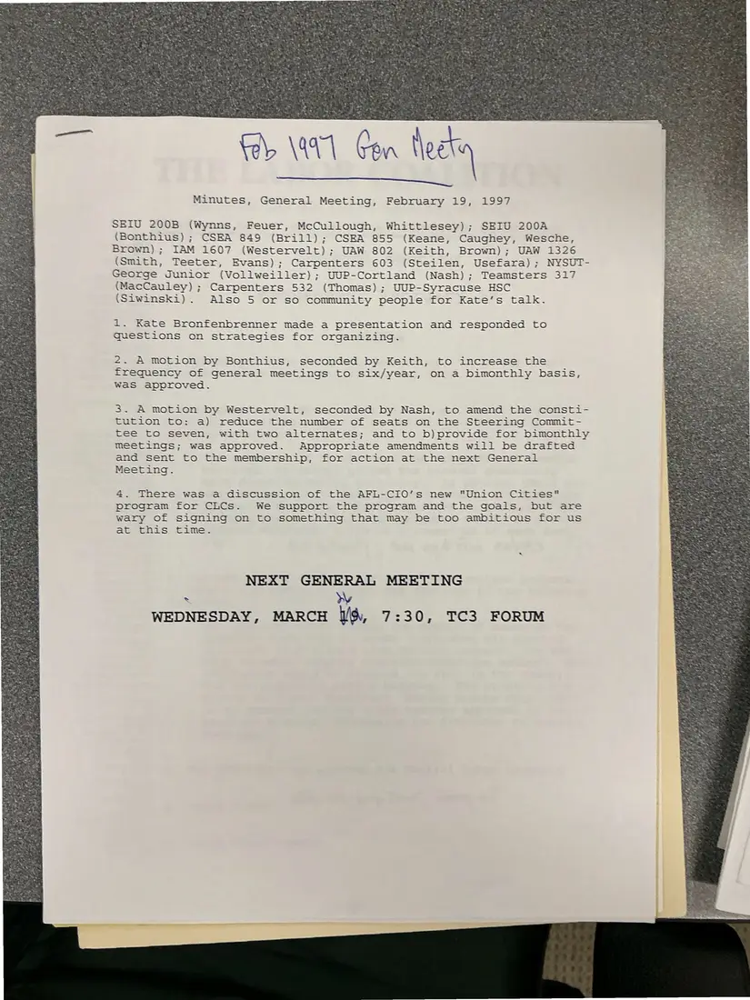
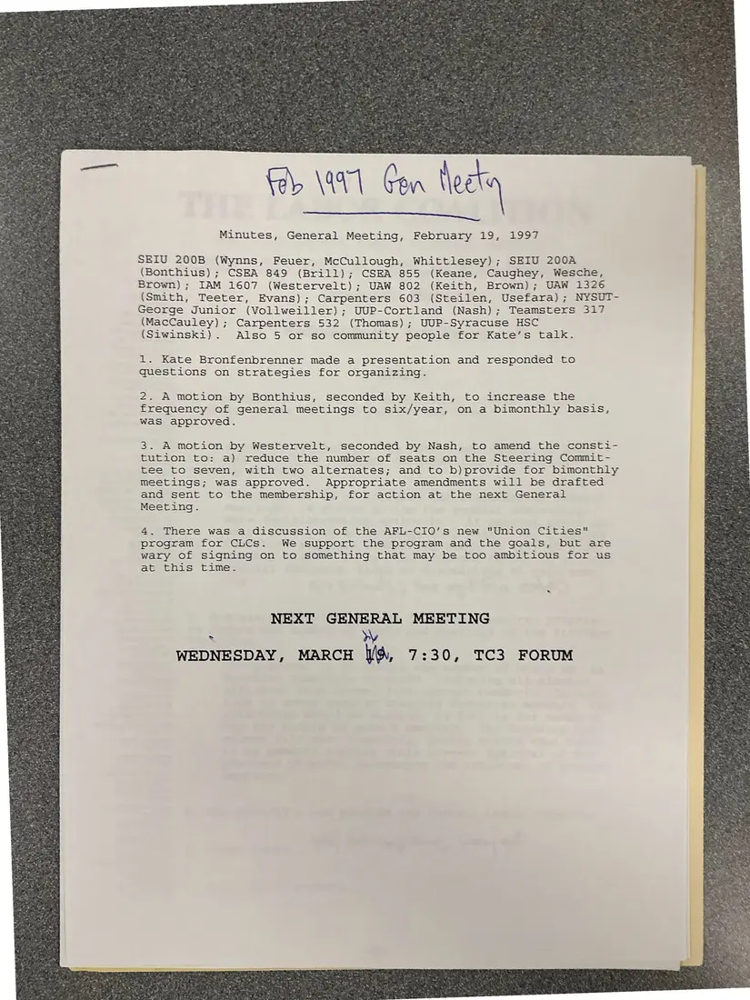

Minutes, 1 page, plus 1 additional copy
Minutes, general meeting, February 19, 1997
February 19, 1997
Records attendance by local and Kate Bronfenbrenner's presentation on organizing strategy. The meeting approves six bimonthly general meetings a year and a smaller Steering Committee, and discusses the AFL-CIO's Union Cities program. Two annotated copies were photographed.
Download or cite this itemPages


(open zoom view)Read the page text (machine-read, contains errors)
This text was generated automatically from the photograph and has not been corrected. The image is the authoritative record.
{el \44 Con Nogte
Minutes, General Meeting, February 19, 1997
SEIU 200B (Wynns, Feuer, McCullough, Whittlesey); SEIU 200A
(Bonthius); CSEA 849 (Brill); CSEA 855 (Keane, Caughey, Wesche,
Brown); IAM 1607 (Westervelt); UAW 802 (Keith, Brown); UAW 1326
(Smith, Teeter, Evans); Carpenters 603 (Steilen, Usefara); NYSUT-
George Junior (Vollweiller) ; UUP-Cortland (Nash); Teamsters 317
(MacCauley) ; Carpenters 532 (Thomas) ; UUP-Syracuse HSC
(Siwinski). Also 5 or so community people for Kate’s talk.
1. Kate Bronfenbrenner made a presentation and responded to
questions on strategies for organizing.
2. A motion by Bonthius, seconded by Keith, to increase the
frequency of general meetings to six/year, on a bimonthly basis,
Was approved.
3. A motion by Westervelt, seconded by Nash, to amend the consti-
tution to: a) reduce the number of seats on the Steering Commit-
tee to seven, with two alternates; and to b)provide for bimonthly
meetings; was approved. Appropriate amendments will be drafted
and sent to the membership, for action at the next General
Meeting.
4. There was a discussion of the AFL-CIO’s new "Union Cities"
program for CLCs. We support the program and the goals, but are
wary Of signing on to something that may be too ambitious for us
at this time.
NEXT GENERAL MEETING
: NV
WEDNESDAY, MARCH It, 7:30, TC3 FORUMAdditional copies
The same document was photographed more than once. These copies may carry different handwriting, stamps, or paper.


(open zoom view)Read the page text (machine-read, contains errors)
This text was generated automatically from the photograph and has not been corrected. The image is the authoritative record.
Minutes, General Meeting, February 19, 1997 SEIU 200B (Wynns, Feuer, McCullough, Whittlesey); SEIU 200A (Bonthius); CSEA 849 (Brill); CSEA 855 (Keane, Caughey, Wesche, Brown); IAM 1607 (Westervelt); UAW 802 (Keith, Brown); UAW 1326 (Smith, Teeter, Evans); Carpenters 603 (Steilen, Usefara); NYSUT- George Junior (Vollweiller); UUP-Cortland (Nash); Teamsters 317 (MacCauley) ; Carpenters 532 (Thomas); UUP-Syracuse HSC (Siwinski). Also 5 or so community people for Kate’s talk. i. Kate Bronfenbrenner made a presentation and responded to questions on strategies for organizing. 2. A motion by Bonthius, seconded by Keith, to increase the frequency of general meetings to six/year, on a bimonthly basis, Was approved. 3. A motion by Westervelt, seconded by Nash, to amend the consti- tution to: a) reduce the number of seats on the Steering Commit- tee to seven, with two alternates; and to b)provide for bimonthly meetings; was approved. Appropriate amendments will be drafted and sent to the membership, for action at the next General Meeting. 4. There was a discussion of the AFL-CIO’s new "Union Cities" program for CLCs. We support the program and the goals, but are wary of signing on to something that may be too ambitious for us at this time. NEXT GENERAL MEETING k RY WEDNESDAY, MARCH \\, 7:30, TC3 FORUM
See something wrong, or recognize a person or event? Send a correction. If you hold rights in this item or think it should not be public, write to the same address.